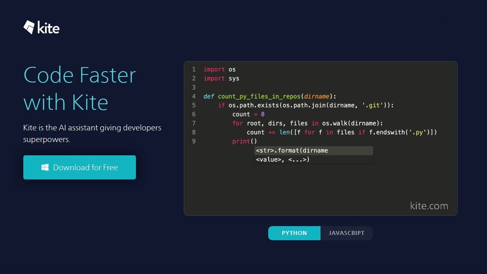

Introduction
AI extensions are plugins, add-ons, or tools that extend the functionality of AI platforms, software, or
frameworks. They help users automate tasks, integrate AI capabilities into existing systems, and enhance
productivity. Whether you're a developer, researcher, or business professional, AI extensions can simplify
complex workflows and unlock new possibilities.
AI extensions come in various forms, from simple browser add-ons to advanced machine learning plugins
tailored for specific industries. As AI continues to evolve, these extensions play a crucial role in
bridging the gap between cutting-edge technology and real-world applications.
Browser Extensions for AI 🔗
AI-powered browser extensions enhance productivity, research, and entertainment by integrating smart features
directly into web browsers. These tools assist users with writing, transcription, summarization, workflow
automation, and more, making daily tasks more efficient.
- ▪ Grammarly - An AI-powered writing assistant that helps users improve grammar, spelling,
punctuation, and style in real-time. It provides suggestions for clarity, conciseness, and tone, making
it a valuable tool for professionals, students, and content creators.
Image ▼
- ▪ Otter.ai - A transcription tool that uses AI to convert audio and video content into text
with
high accuracy. It is widely used for meetings, interviews, and lectures, enabling users to generate
searchable and shareable transcripts effortlessly.
Image ▼
- ▪ Merlin - An AI-powered Chrome extension that assists users by summarizing long articles,
generating content, and answering questions within the browser. It enhances productivity by quickly
extracting key information and providing AI-driven insights.
Image ▼
- ▪ Scribe - A workflow automation tool that captures on-screen actions and turns them into
step-by-step guides. It is useful for creating tutorials, onboarding new employees, and documenting
processes efficiently without manual effort.
Image ▼
- ▪ Wiseone - An AI-driven reading assistant that helps users analyze and summarize online
articles,
verify sources, and gain deeper insights. It enhances reading comprehension and research efficiency by
providing contextual explanations.
Image ▼
- ▪ Tactiq - An AI-powered meeting assistant that captures real-time transcriptions from
Google Meet, Zoom, and Microsoft Teams. It also highlights key points and generates meeting summaries to
improve note-taking and follow-ups.
Image ▼
AI Extensions for Development 🛠
AI-powered extensions help developers integrate AI into their projects by providing code suggestions,
automation, debugging, and efficiency improvements. These tools enhance productivity, streamline workflows,
and assist in AI model development. By leveraging machine learning and AI-driven insights, developers can
write, test, and optimize code faster and more accurately.
- ▪ Visual Studio Code AI Extensions - Plugins such as Python, TensorFlow, and Pylance
enhance AI development by offering smart suggestions, syntax highlighting, and debugging support within
VS Code helping developers write efficient and error-free code while integrating AI frameworks
seamlessly.
Image ▼
- ▪ GitHub Copilot - An AI-powered code completion tool that suggests code snippets, entire
functions, and even full implementations, helping developers write code faster and with fewer errors. It
learns from millions of open-source projects and adapts to different programming styles.
Image ▼
- ▪ Kite - A machine learning-based coding assistant that provides real-time code
completions, documentation, and AI-driven insights to speed up coding in languages. It enhances
developer productivity by reducing the time spent searching for documentation and fixing syntax errors.
Image ▼

- ▪ Tabnine - An AI-powered code assistant that predicts and autocompletes lines or blocks of
code using deep learning models, supporting multiple programming languages. It helps developers focus on
logic rather than syntax, making coding faster and more efficient.
Image ▼
- ▪ Intel OpenVINO Toolkit - An AI extension that optimizes deep learning models for edge and
cloud applications, enabling developers to deploy AI efficiently across different hardware platforms. It
provides performance optimization and hardware acceleration, making AI integration seamless.
Image ▼
- ▪ CodiumAI- A smart AI-powered extension that assists developers by analyzing code,
suggesting optimizations, and generating meaningful tests to improve code quality and efficiency. It
helps reduce bugs, automate testing, and ensure robust software development.
Image ▼
AI Extensions for Business and Productivity 💼
AI-powered extensions help businesses and professionals streamline workflows, automate repetitive tasks, and
improve decision-making. These tools integrate AI capabilities into existing platforms, enhancing efficiency
and productivity.
- ▪ Crystal Knows - A personality AI tool that analyzes communication styles and provides
insights to enhance sales, leadership, and team collaboration by offering personalized messaging
suggestions.
Image ▼
- ▪ Zapier AI Actions - Enables users to automate workflows by integrating AI models into
various apps like Slack, Gmail, and Trello, reducing manual effort and improving task management. It
supports thousands of apps, making automation seamless across different business tools.
Image ▼
- ▪ Fireflies.ai - An AI-powered meeting assistant that transcribes, summarizes, and analyzes
conversations from virtual meetings, helping teams stay organized and improve follow-ups.
Image ▼
- ▪ Salesforce Einstein - A suite of AI-powered CRM tools that provide insights,
predictions, and recommendations to help businesses optimize customer relationships and drive sales. It
enhances lead scoring, forecasting, and customer engagement with AI-driven analytics.
Image ▼
- ▪ Grammarly Business - A writing assistant designed for teams and professionals, ensuring
clear, concise, and effective communication in emails, reports, and other business documents.
Image ▼
- ▪ Notion AI - Enhances the Notion workspace by generating content, summarizing notes, and
automating tasks, making collaboration and documentation more efficient. It also helps users brainstorm
ideas and refine writing with AI-generated suggestions.
Image ▼
AI
EXTENSION
1. Data Input - Collects and processes information (e.g., text, images, user
input).
2. AI Processing - Uses machine learning models to analyze and enhance data.
3. Automation & Decision Making - Suggests actions, automates repetitive
tasks, or provides insights.
4. Output & Integration - Delivers results into applications like CRM, project
management tools, etc.
🚀 Future of AI Extensions
🔥 Key Insight: The future of AI extensions is all about accessibility, efficiency,
and automation.
📌 No-Code AI Tools
No-code AI platforms are making AI development accessible to non-technical users. These tools allow users to
build AI-driven applications without writing code, democratizing AI and accelerating innovation across
industries. Platforms like Google's AutoML and Microsoft's Power Platform enable businesses to automate
workflows, analyze data, and implement AI-driven decision-making with minimal technical expertise.
⬇️
📌 Edge AI
Edge AI moves AI processing closer to the data source, reducing latency and improving efficiency. Instead of
relying on cloud-based AI models, edge AI runs directly on devices such as smartphones, IoT sensors, and
embedded systems. This trend is particularly valuable for real-time applications like autonomous vehicles,
smart healthcare devices, and industrial automation, where low latency is crucial.
⬇️
📌 AI-Powered Automation
Hyper-automation, powered by AI, is revolutionizing industries by automating complex processes with minimal
human intervention. AI-driven automation tools, such as robotic process automation (RPA) combined with
machine learning, enhance efficiency and decision-making in areas like customer service, finance, and supply
chain management. As AI continues to improve, we can expect even more sophisticated automation capabilities,
enabling businesses to optimize operations at an unprecedented scale.
🔍 Quick Comparison
| Trend |
Description |
Example Use Case |
| No-Code AI Tools |
AI development without coding |
AutoML, Power Platform |
| Edge AI |
AI running on local devices |
Smart IoT, Autonomous cars |
| AI Automation |
AI-driven process automation |
RPA, AI chatbots |